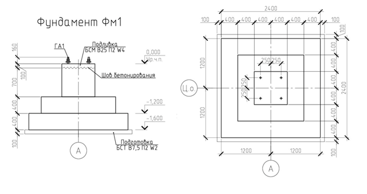

Железобетонные фундаменты: точные геометрические расчеты

Подсчет объемов железобетонных конструкций конструкций может показаться простой геометрией, когда нам известны всего 3 значения: длина, ширина и высота. Однако подсчет объемов и поиск известных значений имеют свои тонкости, их разберем далее.
Для расчета объема работ для заказа бетона достаточно использовать размеры конструкции, которые даны в проекте, также из проекта берем марку бетона.
Рассмотрим на примере бетонной подготовкиИсходное изображение недоступно. Адрес источника

Данные: марка бетонной подготовки В7,5 П2, W2. Длина и ширина бетонной подготовки по схеме больше нижней части фундамента на 100 мм с каждой стороны. Толщина подбетонки – 100 мм.
Площадь бетонной подготовки: (2,4 + 0,1 + 0,1) × (2,4 + 0,1 + 0,1) = 6,76 кв. м.
Объем бетонной подготовки:Исходное изображение недоступно. Адрес источника
На разрезе чертежа указана толщина подбетонки 100 мм, поэтому ее объем будет равен 6,76 × 0,1 = 0,676 куб. м.
Таким же образом рассчитывают каждую ступень фундамента. В итоге объемы суммируют в зависимости от типа применяемого бетона.
Учитывайте особенности расчета объема монолитных конструкций
При подсчете объема монолитных конструкций детально рассчитывайте правильные геометрические фигуры и путем сложения вычисляйте корректный объем бетона.
При подсчете объема готовой конструкции для составления смет высоту элемента следует принимать как разницу H верха ступени – H ступени. Если рассчитаете фактическую высоту и габариты конструкции, то объем для исполнительной схемы и КС-2 будет максимально точным.